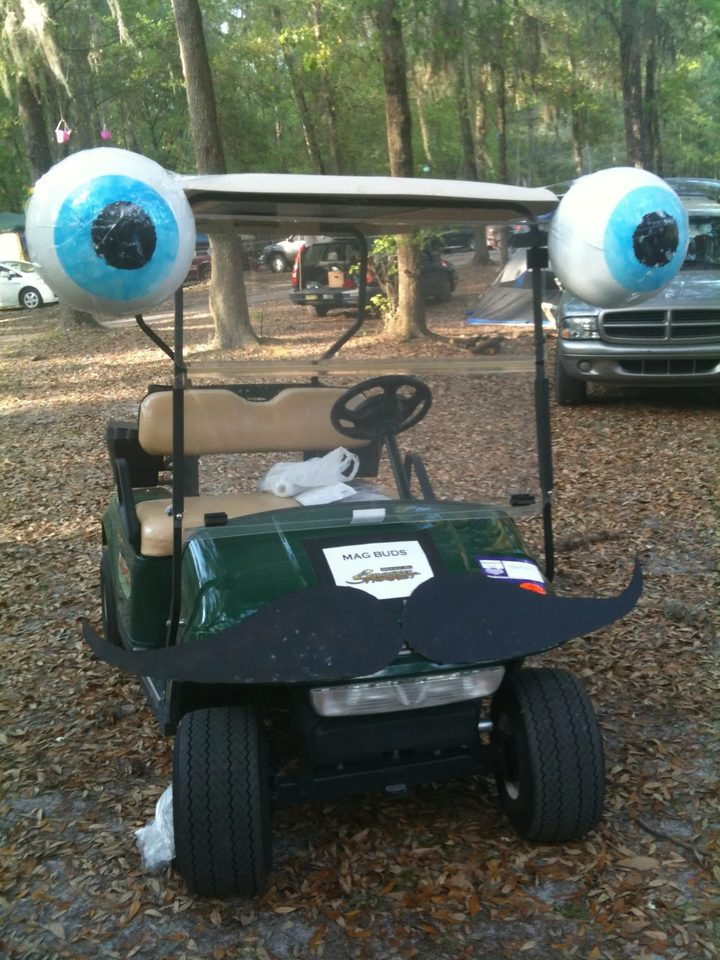
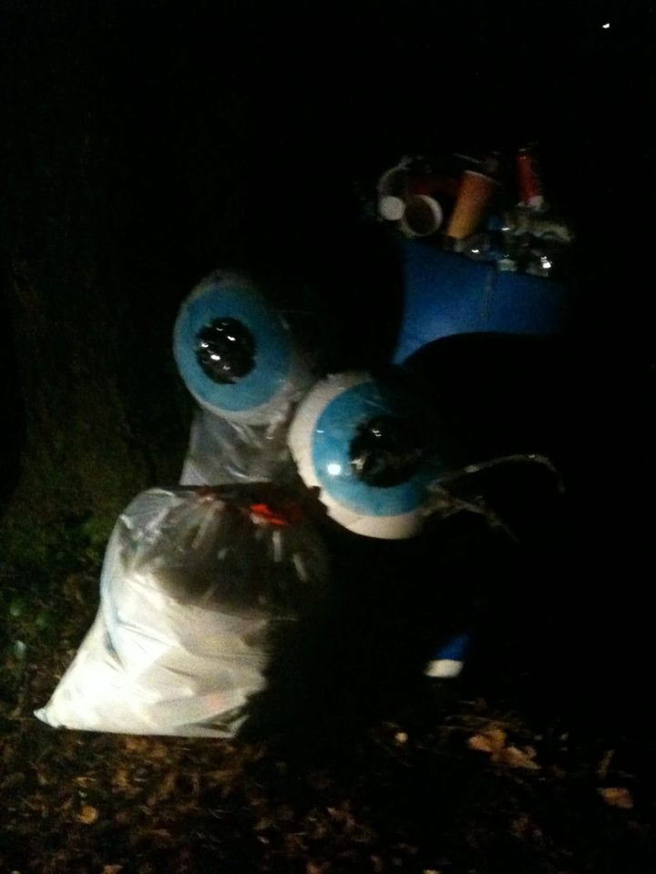

The story so far
It all started on a napkin
Zerble has been rolling around festivals since 2011, picking up a few upgrades along the way.
-
Sketched on a napkin
Gary was building MagBuds, a volunteer registration system for the festivals at Florida's Spirit of the Suwannee Music Park (Magnolia Fest and SpringFest among them), when word came that he'd be getting his own golf cart at the fest.
He got the news at Mo Daddy's, a cornerstone of Asheville's music scene, and sketched Zerble right there on a napkin.

The original napkin, 2011 -
Eyes on stalks
The first eyeballs were blue marbled bouncy balls from Kmart, primed white everywhere but the iris, with headlamps taped to the back so they'd glow after dark.
They perched out on the roof corners like a snail's eyes, and a mustache cut from black posterboard finished the face.

Eyeball #1, fresh coat of primer 
The MagBuds cart -
–
The festival years
For the next few years Zerble worked the circuit, hauling gear and shuttling musicians while spreading joy (and bubbles) wherever the cart went. Somewhere along the way the eyes migrated inward from their snail-like perch, and the second version traced the mustache in green EL wire so it glowed after dark.
- Magnolia Fest
- SpringFest
- Bear Creek
- Wanee
- French Broad River Fest

Still keeping an eye on things after dark -
Leveling up
In 2016, Gary and Locke Crawford, who own Zerble together, bought a red E-Z-GO and built the version that's still rolling today. Locke handled much of the wiring, with dashboard switches and USB ports all over.
That's the bright-eyed legend you'll find at LEAF, the Lake Eden Arts Festival in Black Mountain, and it has a page in the LEAF book. Between festivals, home is a garage in West Asheville.

Zerble, the modern era -
Zerble gets a game
Gary started building Zerble at the Festival, a free browser game where you drive Zerble through a festival that never ends. More than 400 commits later, the crowd smiles back and the drum circles get louder after dark.
-
Shuttling the Art Walk
Zerble ran shuttle duty at the East-West Asheville Fall Art Walk, Lamplight AVL’s neighborhood celebration of art, music, and performance, close to home in West Asheville.
-
Up next
The Lake Eden Reunion
Zerble's next stop is the Lake Eden Reunion, so keep an eye out.